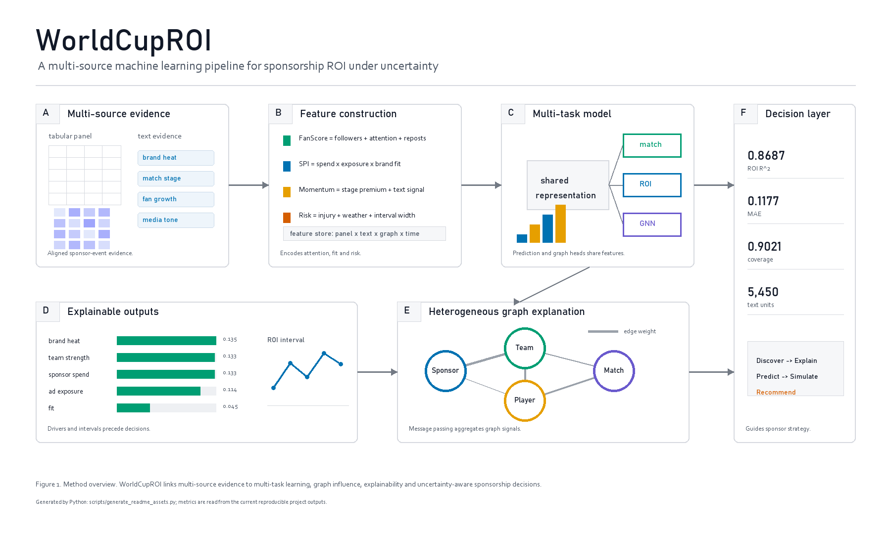
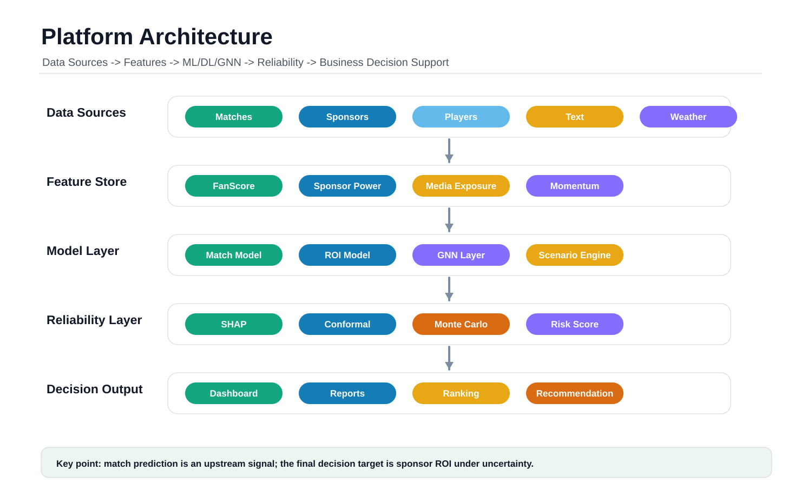
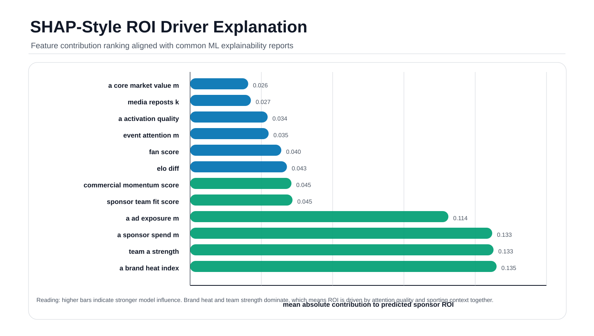
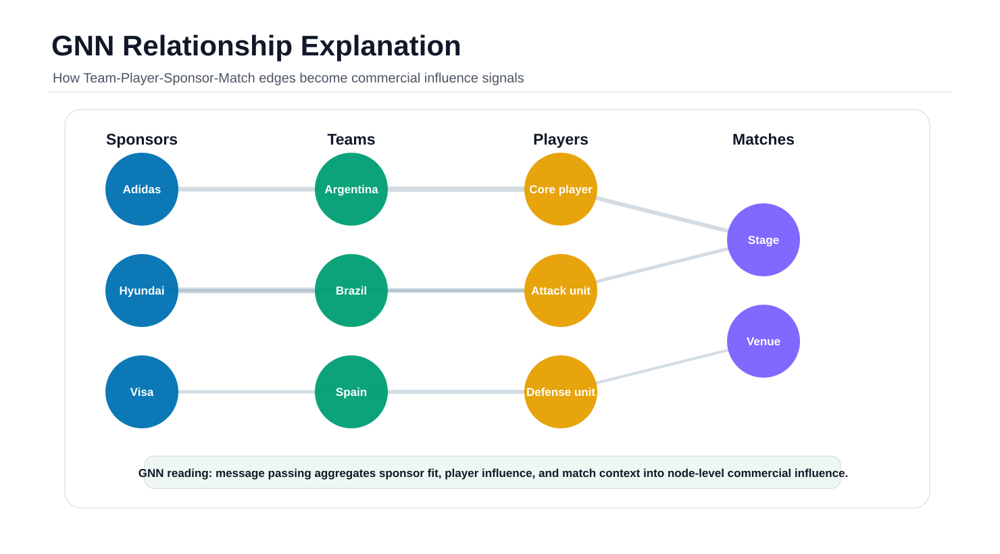
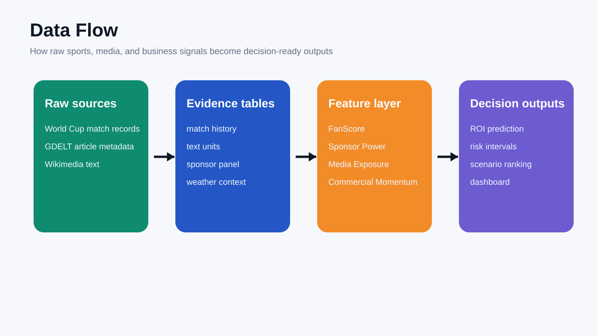
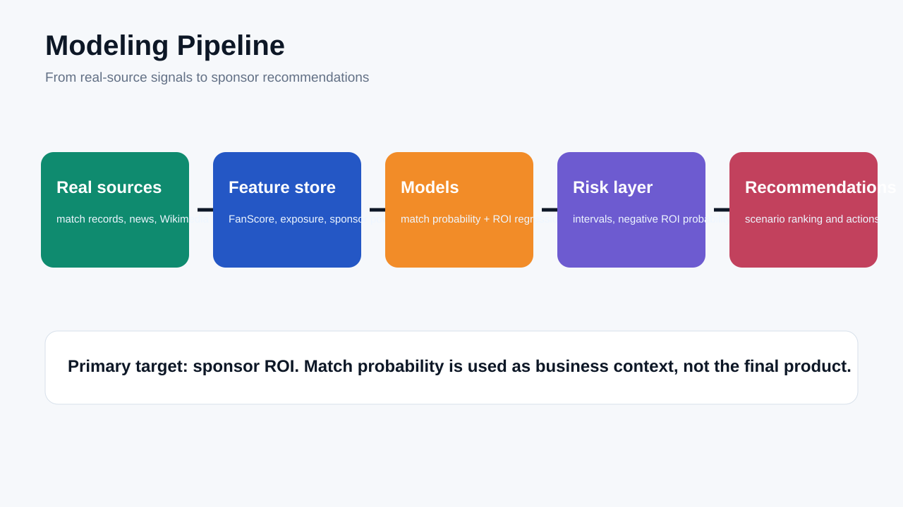
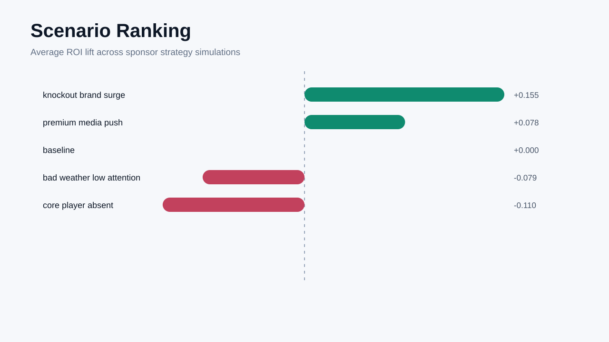
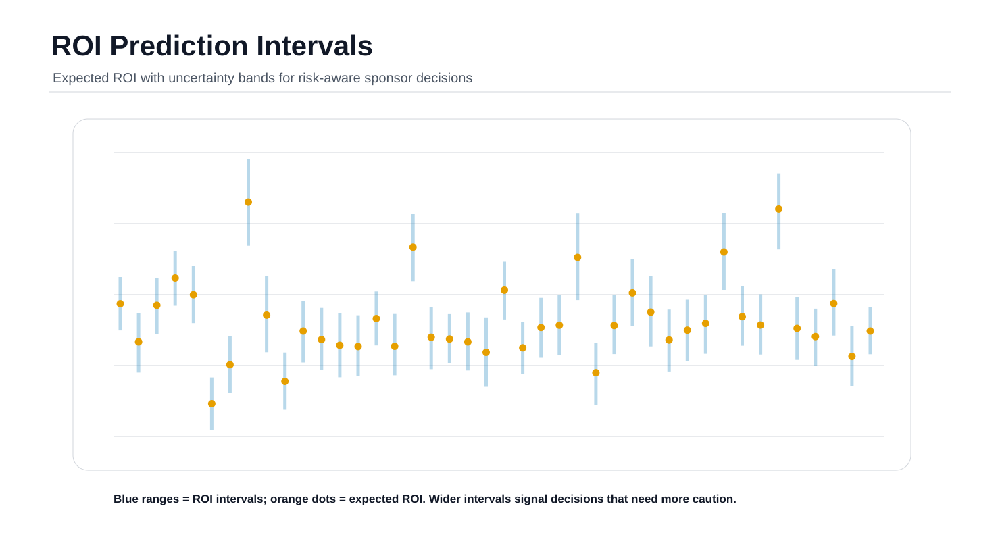

WorldCupROI Visual Preview
All visuals on this page are generated by Python scripts in the repository. Regenerate with: python scripts/generate_readme_assets.py and python scripts/generate_model_visuals.py.

scripts/generate_readme_assets.py with Python + PIL.
scripts/generate_model_visuals.py as SVG.
reports/roi_feature_importance.csv.



data/scenario_recommendations.csv.
data/roi_uncertainty.csv.